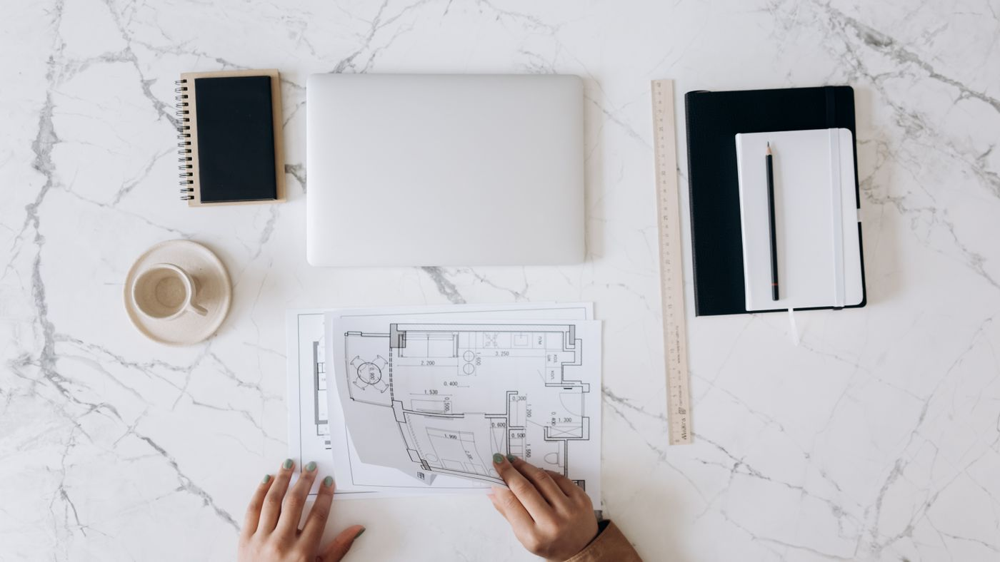
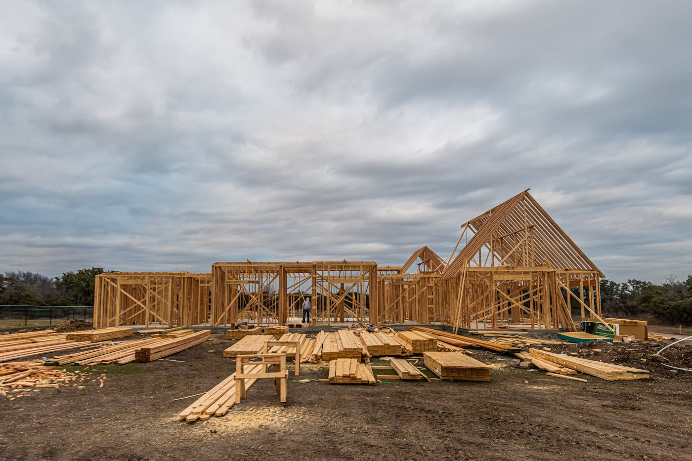

Quick answer: A townhouse builder in Sydney designs, obtains development approval for, and constructs projects of three or more dwellings on a single lot. Construction costs run $2,350–$4,500 per m² in 2026, and a three-townhouse project — combined floor area around 450 m² — typically costs $1.1M–$2M in build costs before land, design fees, and subdivision. Townhouse development requires R3 Medium Density Residential zoning in most Sydney councils and a minimum lot size of 800–1,200 m². From first conversation to strata title settlement, the process runs 24–36 months.
Keeping up with the Joneses has evolved. The Joneses have subdivided their block, built three townhouses, and are fielding calls from their broker about the next site — all while their original driveway is still in the agent’s window.
[Right. Straight face now.] Here is what actually matters: what a townhouse builder in Sydney does, what your lot needs to qualify, what the construction costs in 2026, and what happens at every stage from the first site assessment to strata title settlement.
- What a townhouse builder actually does
- Townhouse vs duplex — which development type suits your lot
- R3 zoning and what it means for your block
- Minimum lot sizes for townhouse development in NSW
- What townhouse construction costs in Sydney (2026)
- The DA approval process for townhouses
- Strata title vs Torrens title — which subdivision method
- What the timeline actually looks like
- When NOT to build townhouses
- Six questions to ask your townhouse builder
- FAQ
What a Townhouse Builder Actually Does
A townhouse builder manages multi-dwelling residential construction — projects of three or more attached or semi-detached dwellings on a single title. That definition covers a lot of variation: three modest two-bedroom dwellings on a corner block, five architect-designed terrace-style homes on a larger R3 site, or a boutique cluster of four townhouses with basement parking.
What separates a capable townhouse builder from a standard residential contractor is experience across the full development process. The build itself is only one phase. A builder who genuinely manages townhouse development also coordinates the planning consultant, architect, structural engineer, and certifier from day one — not after the DA is lodged and the problems become expensive.
Some builders offer a partial service: design-and-construct from an approved DA. Others manage the whole process from site feasibility to strata title registration. The distinction matters because errors made in the design or planning phase — a setback that does not comply, a floor space ratio that has been misread — cost far more to correct during construction than they do on paper.
TURYN manages the full process for Sydney townhouse projects, from initial site assessment through to handover. If you have a site and want a feasibility view before committing to anything, the enquiry form is the right starting point.
Townhouse vs Duplex — Which Development Type Suits Your Lot
These terms get conflated regularly. They are different development types under NSW planning law, and the distinction determines what your lot can carry.
A duplex (dual occupancy) involves two dwellings on one lot — either attached (sharing a wall) or detached (separate structures). Dual occupancy is permitted in R2 Low Density Residential zones under the Housing SEPP, which covers the majority of Sydney’s suburban residential land. Minimum lot size for a duplex is typically 400–600 m² depending on the council. For more on the duplex path, see our guide to duplex builders in Sydney.
A townhouse development (multi-dwelling housing) involves three or more dwellings on one lot. It requires R3 Medium Density Residential zoning in most Sydney councils. R3 land is less common than R2 — it exists in identified medium-density corridors, typically along arterial roads, near train stations, or in areas earmarked for increased density under local housing strategies.
The planning rules create a hard boundary. A lot zoned R2 cannot carry a three-dwelling townhouse development regardless of its size. If your block is zoned R2 and you want three dwellings, the answer is dual occupancy plus a granny flat — a different planning pathway with different constraints.

Photo via Pexels
R3 Zoning and What It Means for Your Block
R3 Medium Density Residential is the zone that enables townhouse development in NSW. It is not a blanket category — each council applies it selectively, and the development controls attached to it vary materially between LGAs.
R3 land in Sydney is found predominantly in:
- Inner-west and eastern suburbs corridors (Strathfield, Canterbury, Marrickville, Randwick)
- Northern suburbs medium-density pockets (Lane Cove, Ryde, Willoughby)
- Western Sydney growth corridors (Parramatta, Blacktown, Cumberland)
- South and south-west corridors (Hurstville, Kogarah, Sutherland)
R3 zoning is like a building site’s load-bearing wall — it looks the same as everything around it on a street map, but the structural implications are entirely different. Two blocks side by side can have different zones, different permitted uses, and different financial outcomes from development.
Confirm your lot’s zone before briefing any builder or designer. The NSW Planning Portal shows zoning, floor space ratio, and height of buildings controls for any address in the state. This check takes three minutes and eliminates the most common source of wasted feasibility work.
Minimum Lot Sizes for Townhouse Development in NSW
Lot size requirements for townhouse development are set by each council’s Local Environmental Plan (LEP), not by a single statewide standard. The figures below reflect typical Sydney council requirements — verify the specific controls for your LGA before relying on them.
| Development type | Typical minimum lot (Sydney) | Zone |
|---|---|---|
| Dual occupancy (duplex) | 400–600 m² | R2 or R3 |
| Three townhouses | 800–1,000 m² | R3 |
| Four townhouses | 1,000–1,400 m² | R3 |
| Five or more townhouses | 1,400 m²+ | R3 |
Frontage is often as constraining as total area. Many councils require a minimum street frontage of 15–20 m for a three-townhouse development. A 900 m² block with 10 m of frontage may not be feasible regardless of total area.
Site coverage ratios — typically 40–55% of the lot area that can be built upon — and floor space ratios (FSR) between 0.5:1 and 0.7:1 in most R3 zones further constrain what can be built. A town planner’s feasibility check before any design work begins is not optional on a townhouse project. It is the first piece of work that should be done.
What Townhouse Construction Costs in Sydney (2026)

Photo via Pexels
Construction costs for townhouses in Sydney in 2026, based on current industry benchmarks:
| Specification | Cost per m² (construction only) |
|---|---|
| Standard finish — brick veneer or clad | $2,350–$3,000 |
| Mid specification — stone benchtops, engineered timber floors | $3,000–$3,800 |
| High specification — architectural finishes, basement parking | $3,800–$4,500+ |
A three-townhouse project with 150 m² per dwelling (450 m² combined) at mid specification runs $1.35M–$1.71M in construction costs. That is the build contract figure. The full project cost is higher.
What gets added:
- Demolition and site clearing: $20,000–$60,000
- Architect or building designer fees: $80,000–$150,000
- Town planning consultant: $15,000–$35,000
- Structural engineering, hydraulics, energy assessments: $20,000–$40,000
- Council DA fees and contributions (Section 7.11): $40,000–$120,000
- Strata title registration and solicitor costs: $20,000–$40,000
- Landscaping, driveways, fencing: $30,000–$80,000
On a three-townhouse project, total development costs — construction plus all professional fees and contributions, excluding land — typically run $1.6M–$2.4M. Add the land cost and finance, and the all-in figure for a Sydney townhouse project on an 800–1,000 m² R3 lot is $3M–$5M+. This is arithmetic, not a complaint.
The revenue side depends entirely on location and product quality. Three well-designed townhouses in a strong middle-ring suburb can settle at $900,000–$1.6M each. The margin between the two is where the feasibility either holds or does not — which is why an independent feasibility check, not a builder’s optimistic back-of-envelope, is the right starting point. See our overview of building a new home in Sydney for broader cost context.
The DA Approval Process for Townhouses
Multi-dwelling housing in NSW almost always requires a Development Application assessed by council. Complying Development — the faster, privately certified pathway — is not available for townhouse projects under the Housing SEPP.
The DA process for a townhouse development involves:
- Pre-DA meeting — optional but strongly recommended for multi-dwelling projects. Most Sydney councils offer a formal pre-DA consultation service. It surfaces potential objections before the full design is complete.
- Design and documentation — architectural drawings, BASIX certificate, shadow diagrams, stormwater plan, statement of environmental effects, and often a traffic or acoustic report.
- Lodgement and assessment — the DA is lodged on the NSW Planning Portal and referred to council for assessment. Statutory timeframes are 40–60 business days for most councils, though neighbour objections, referrals to external agencies, and requests for information regularly extend this.
- Determination — approval (with conditions), refusal, or deferral for further information.
DA timelines across Sydney’s major townhouse markets vary widely. Inner-west and northern suburbs councils typically run 4–8 months. Western Sydney councils processing high volumes of medium-density applications can run longer. Heritage conservation areas require additional assessment and extend timelines further.
Build your project programme around a 6-month DA assessment as a realistic base case, not the statutory minimum. Treating 40 business days as a target rather than a floor is the most reliable way to have the wrong conversation with your finance team.
Strata Title vs Torrens Title — Which Subdivision Method
Once construction is complete, the individual townhouses need their own titles so they can be sold or mortgaged separately. Two subdivision methods are available.
Strata title is the standard method for townhouse developments. A strata plan is drafted by a registered surveyor and lodged with NSW Land Registry Services. The plan creates individual lot titles for each dwelling and a common property area (shared driveways, gardens, external walls). Each owner holds their lot and a share of the common property.
- Cost: $15,000–$30,000
- Timeline: 2–4 months from construction completion to title registration
- Ongoing: strata levies for maintenance of common property
Torrens title subdivision creates independent freehold parcels with no common property. It is available where the site configuration allows boundaries to be drawn around each dwelling, including the land beneath and immediately around it. More complex on constrained urban sites, more valuable to buyers who prefer unencumbered title.
- Cost: $30,000–$60,000
- Timeline: 3–6 months
- Ongoing: no strata levies
Which method applies depends on the site layout and council requirements. Your town planner and solicitor should confirm the viable subdivision pathway before design begins — not after construction when options are fixed.
What the Timeline Actually Looks Like
| Phase | Duration |
|---|---|
| Site assessment, feasibility, town planning check | 4–8 weeks |
| Design and documentation | 3–5 months |
| DA lodgement and assessment | 4–12 months |
| Construction — three townhouses | 12–18 months |
| Strata or Torrens title registration | 2–4 months |
Total elapsed time from first site assessment to strata title settlement: 24–36 months for most Sydney townhouse projects. Projects in heritage conservation areas or those that encounter DA objections sit toward the upper end of that range.
These timelines assume a competent team engaged from the start, no significant variations during construction, and no supply chain disruptions. Budget for each buffer as a real possibility. The projects that finish on schedule are the ones whose programmes were built on realistic assumptions from day one.
Photo via Pexels
When NOT to Build Townhouses
This section is the one most development guides skip. We are not most guides.
Do not proceed if your lot is zoned R2. Multi-dwelling housing is not a permitted use in R2 Low Density Residential zones under the standard NSW planning framework. No builder or planner can change this. If your feasibility assumes R3 entitlements on an R2 block, the feasibility is wrong.
Do not proceed if your lot is under 700 m². Below this size, the arithmetic rarely works for a three-townhouse project. Site coverage and setback requirements compress the buildable area to the point where per-dwelling size falls below what the market will pay for — and the professional fees and council contributions are fixed regardless of project size.
Do not proceed on a thin construction budget. A townhouse project priced at $1,000 per m² for construction is not a real budget — it is a number that will escalate before the slab is poured. Undercosting a multi-dwelling project is not a way to make the feasibility work. It is a way to run out of money during construction, which is a considerably worse outcome.
Do not proceed without an independent feasibility assessment. A builder’s indicative construction quote is not a feasibility study. Neither is a real estate agent’s comparable sales list. An independent quantity surveyor’s cost estimate and a realistic end-value assessment, run before any design spend, is the minimum standard for a project of this scale.
If your lot and budget qualify and you want a builder who manages the full process, the questions in the next section will help you evaluate your options.
Six Questions to Ask Your Townhouse Builder
Ask these before the first site meeting. Not after three good conversations and a set of renders.
- Are you licensed for residential building work in NSW, and can I verify it? Check the licence number on the NSW Fair Trading register before any further discussion. The licence should be current and held by the contracting entity — not an individual no longer with the business.
- Have you completed townhouse projects of comparable scale in NSW? Multi-dwelling experience is materially different from single-dwelling residential. Ask for addresses of completed projects. Drive past at least one. If possible, speak with the owner.
- Do you manage the DA process, or do you only build from an approved DA? Both models exist. Neither is inherently wrong, but you need to know which engagement you are entering. A builder who manages the full planning process requires different due diligence than one who only builds.
- Who is responsible for coordination with the town planner, architect, and certifier? On a townhouse project, the answer to this question determines how much of that coordination you are doing yourself. If the builder’s answer is unclear, that clarity is going to cost you somewhere in the programme.
- What is your current programme capacity, and what is the realistic construction start date? A builder who can start your three-townhouse project in four weeks has a reason for that availability. A builder with a six-month lead time also has a reason. Ask both questions and listen carefully to the answers.
- How does your contract handle variations and provisional sums? Townhouse projects at this scale involve significant provisional sums — particularly in siteworks, services connections, and finishes. Ask for the variation clause in the proposed contract. Variations should be priced and approved in writing before work proceeds. Reconciliation at the end is not a standard you should accept.
Six questions. Not unreasonable for a project where the all-in cost routinely exceeds $3M.
FAQ
How much does it cost to build a townhouse in Sydney?
Construction costs for a townhouse in Sydney run $2,350–$4,500 per m² in 2026, depending on specification and site complexity. A three-townhouse project with a combined floor area of around 450 m² typically costs $1.1M–$2M in construction alone, before land, design fees, council contributions, and subdivision costs. Total development costs excluding land are usually $1.6M–$2.4M for a three-dwelling project.
How long does it take to build a townhouse in NSW?
The build itself takes 12–18 months. Add 3–5 months for design, 4–12 months for DA approval depending on the council, and 2–4 months for strata or Torrens title subdivision after completion. Total elapsed time from first conversation to settlement is typically 24–36 months. Heritage conservation areas and DA objections push toward the longer end.
What is the minimum lot size for a townhouse in NSW?
Minimum lot sizes vary by council and zone. A three-townhouse project typically requires 800–1,200 m² in most Sydney councils. Some councils permit multi-dwelling housing on lots from 700 m² where frontage and site coverage criteria are met. The relevant figure is in the council’s Local Environmental Plan — confirm it on the NSW Planning Portal before committing to any design work.
Do I need R3 zoning to build a townhouse in NSW?
Yes, in most cases. Multi-dwelling housing of three or more dwellings is generally only permitted in R3 Medium Density Residential zones under the standard NSW planning framework. R2 Low Density Residential zones permit only dual occupancy. There are exceptions under some local LEPs and in certain growth precincts — confirm your lot’s zoning on the Planning Portal before proceeding.
What is the difference between a townhouse and a duplex in NSW?
A duplex (dual occupancy) involves two dwellings on one lot and is permitted in R2 Low Density Residential zones in most councils. A townhouse development involves three or more dwellings — classified as multi-dwelling housing — and generally requires R3 zoning and a larger minimum lot. Duplexes often qualify for a Complying Development Certificate; townhouse DAs go through council.
Do I need a DA to build a townhouse in NSW?
In almost all cases, yes. Multi-dwelling housing of three or more dwellings does not qualify for Complying Development approval under the Housing SEPP. A Development Application assessed by council is the standard approval path. Timeframes range from roughly 40 business days – the statutory target — to 6–12 months depending on the council and project complexity.
Can I strata title my townhouses in NSW?
Yes. After construction, a strata plan is registered with NSW Land Registry Services, creating individual lot titles for each dwelling and a shared common property area. The process costs $15,000–$30,000 and takes 2–4 months. Torrens title subdivision is available for some site configurations where individual lot boundaries can be drawn without common property — more expensive but preferred by some buyers.
What licence does a townhouse builder need in NSW?
A builder undertaking townhouse construction in NSW must hold a contractor licence in the Builder category issued by NSW Fair Trading. For projects over $1M, the licence holder must also hold home building compensation (HBC) insurance. Verify any builder’s licence number on the NSW Fair Trading public register before signing a contract.